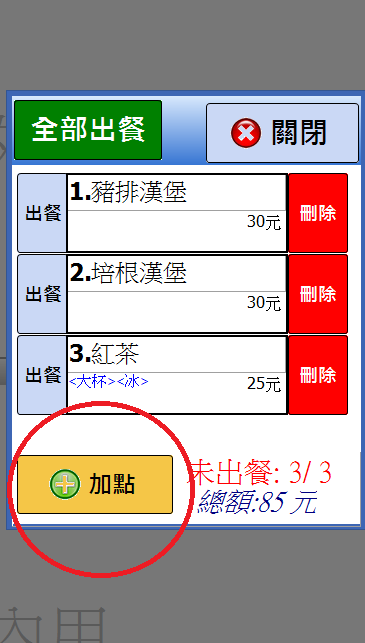

加點時立即自動列印 的問題
應該是加點完畢之後，再按最上方的確定按鈕才列印，否則會出現如上述2次出單的問題，現場工作人員對此會相當疑惑，可以麻煩您幫忙測試看看嗎?
2 個回答
您好
測試的結果無法重現您所說列印兩次的情況
(但兩台印單機的情況 加點的列印內容確實有問題
當自動列印時 應該只會列印加點的部分 已經修正這部分)
可否請您至首頁下載更新 確認是否為之前版本問題?
測試的結果無法重現您所說列印兩次的情況
(但兩台印單機的情況 加點的列印內容確實有問題
當自動列印時 應該只會列印加點的部分 已經修正這部分)
可否請您至首頁下載更新 確認是否為之前版本問題?
您好
"當按加點時會立即自動列印" 是指下圖的按鈕嗎?

該按鈕裡面 並無列印的程式碼
站長對您所描述的情形 感到困惑不解
1.請問按下加點後 印出的內容是該單所有的餐點嗎?
2.請問是餐點印單機印出 還是飲料印單機印出?
3.可否 執行系統裡的備份功能 將備份目錄下的 Options.ini ,set.ini 兩個檔案
寄到站長信箱 advposys@gmail.com 已便進一步釐清問題